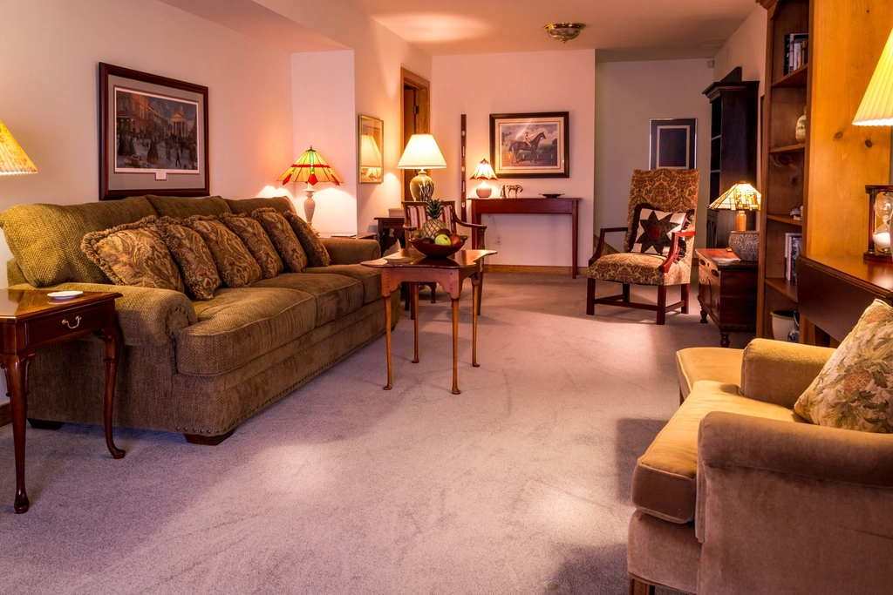
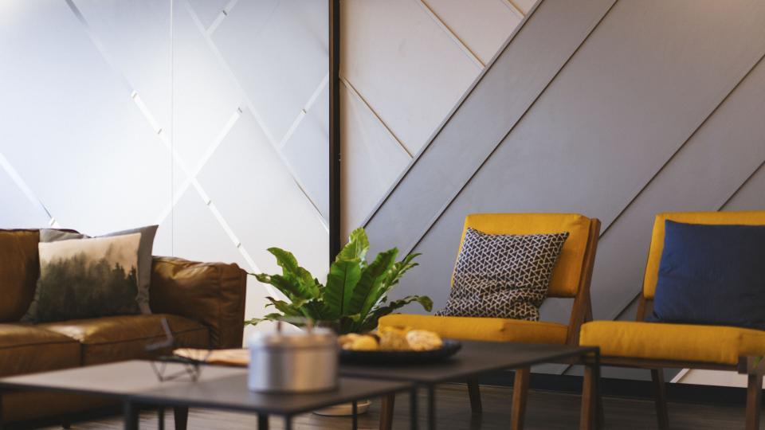
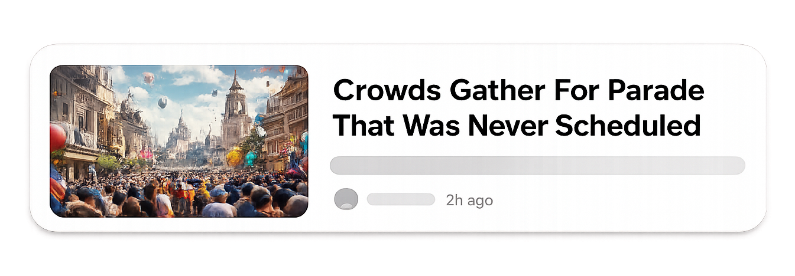
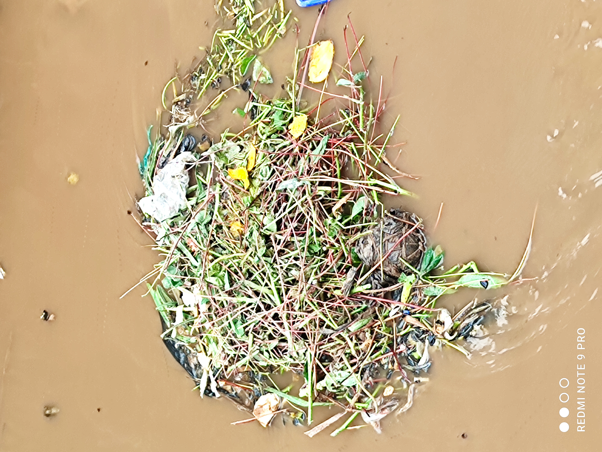

scroll for
10 seconds...
10 seconds...

how much is REAL?
% human?

3 years ago...
100% HUMAN
today...
good luck.

AMEN 47K
...a shrimp. as Jesus.


DIDN'T HAPPEN


0 real members



GARBAGE
cheap.
fake.
mass-produced.
...and nobody told it to.
WHY?